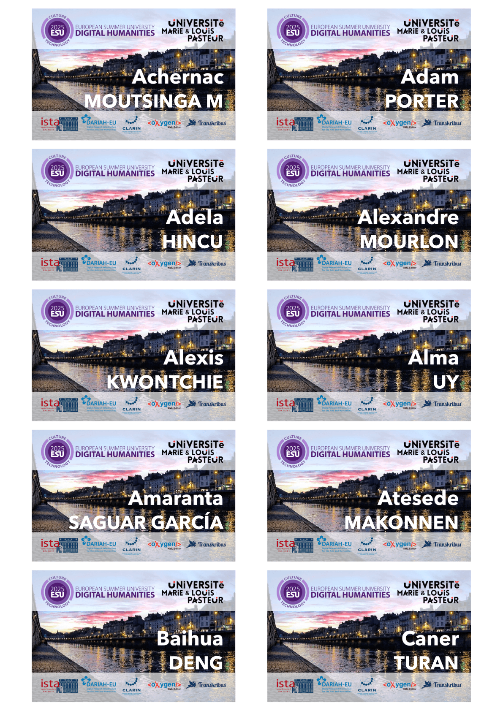
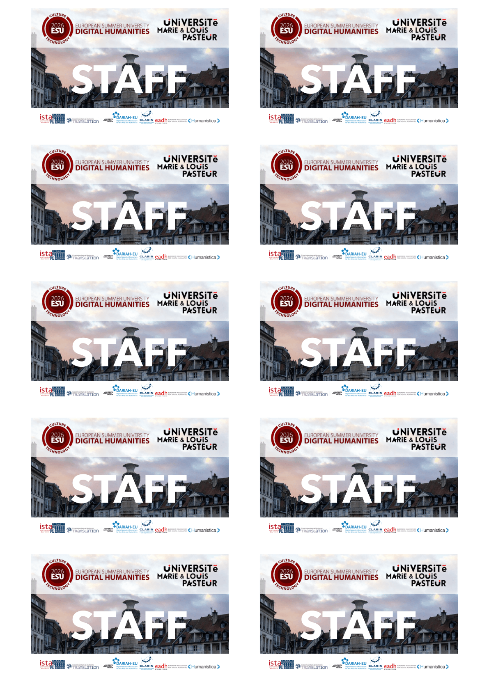
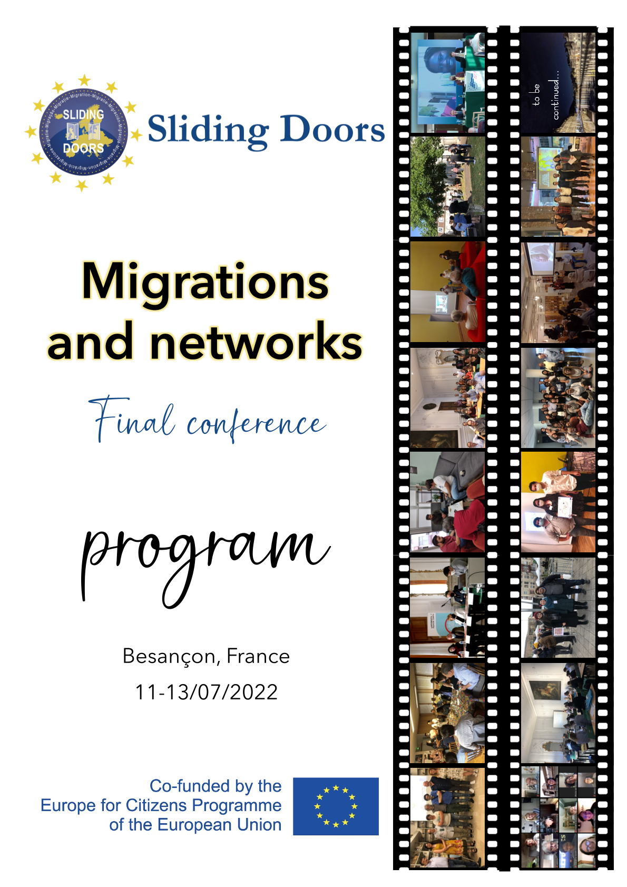
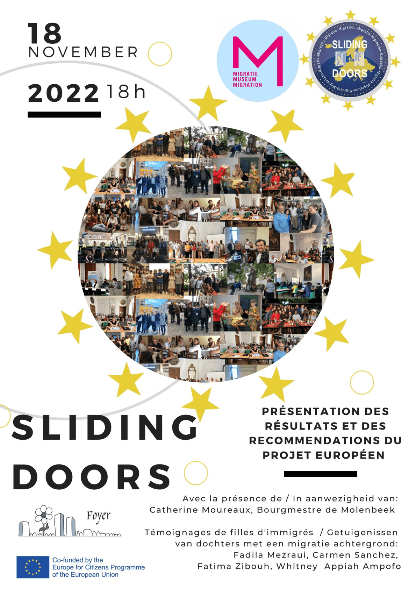
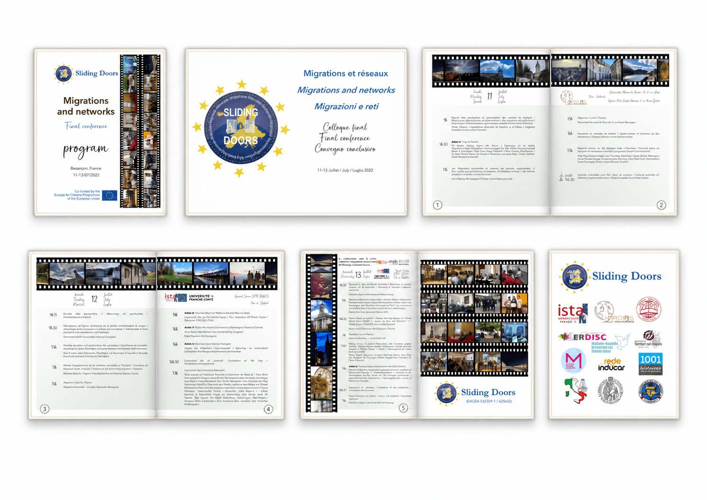

Identité Visuelle & Événementiel
La communication scientifique exige une identité visuelle cohérente et déclinable. De la promotion d'un projet européen à la logistique d'accueil d'une université d'été, ces réalisations montrent ma capacité à adapter un concept graphique à des supports variés et fonctionnels.
European Summer University in Digital Humanities (ESU DH)
Création et automatisation de badges nominatifs pour les éditions 2025 et 2026. Le défi était d'allier une lisibilité immédiate des noms des participants avec les éléments institutionnels de l'Université Marie & Louis Pasteur et des partenaires européens. La photographie de mise en situation des badges a également été réalisée par mes soins.


Projet Européen Sliding Doors
Conception du support de communication pour la présentation des résultats et recommandations du projet. Un design pensé pour mettre en valeur l'aspect humain et collaboratif à travers une mosaïque photographique, composée en grande partie de mes propres clichés originaux, tout en respectant la charte graphique des institutions européennes.


Programme de la Conférence Finale
J'ai également réalisé la mise en page du programme de la conférence finale, qui s'est tenue à Besançon en juillet 2022. Ce document intègre de nombreuses photographies que j'ai prises tout au long du projet, servant de mémoire visuelle de notre travail collaboratif.

Ouvrir le programme (PDF)